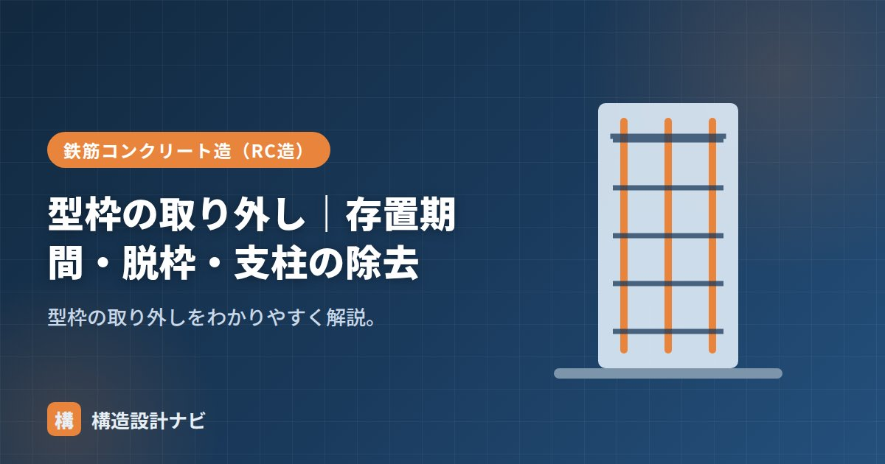

型枠の取り外し｜存置期間・脱枠・支柱の除去

型枠は、コンクリートが必要な強度に達してから取り外します。早すぎると変形・破損するため、存置期間や強度の規定があります。この判定を「脱枠（だっくorだつわく）」の判定と呼び、部位（せき板か支柱か）や気温によって基準が変わるため、現場では材齢管理・強度管理の両面で計画的に進める必要があります。
- 型枠の取り外しはコンクリートの圧縮強度、または材齢・気温で判定する。
- 荷重を直接支えないせき板は比較的早く外せるが、スラブ下・梁下の支柱は最後まで残す。
- 早期の取り外しはたわみ・ひび割れ・崩落など重大な事故につながる。
取り外しの考え方
型枠は、コンクリートが自重や作業荷重を支えられる強度になってから外します。判定はコンクリートの圧縮強度、または材齢・気温（積算温度）で行います。強度による判定は、現場で採取した供試体を用いて実際の圧縮強度を確認する方法で、材齢・気温による判定は、あらかじめ決められた養生日数を目安にする方法です。強度確認が難しい小規模工事では材齢による判定が使われることもあります。
せき板の存置（目安）
コンクリートに接するせき板のうち、荷重を直接支えない部分（基礎・梁側・柱・壁）は、比較的早く外せます。
| 部位 | 取り外しの目安 |
|---|---|
| 基礎・梁側・柱・壁のせき板 | 圧縮強度5N/mm²以上（または材齢・気温で判定） |
| スラブ下・梁下のせき板 | 設計基準強度の50%程度以上など |
支柱（支保工）の除去
スラブ下・梁下を支える支柱（支保工）は最後まで残します。これらは荷重を支え続けるため、コンクリートが十分な強度（おおむね設計基準強度の85%以上、または12N/mm²以上など）に達してから外します。早期の支柱撤去はたわみ・ひび割れ・崩落の危険があります。特に上下階で同時に施工が進む場合、上階の型枠・支柱の荷重が下階のスラブに伝わることもあるため、複数階にわたる支柱の存置計画（盛り替え支保工など）も考慮します。
気温による違い
コンクリートの強度発現速度は気温に大きく左右されます。夏季は反応が速く進むため存置期間を短縮できることがありますが、冬季は反応が遅く、寒中コンクリートのように凍結の危険がある時期はむしろ存置期間を長めに取る必要があります。材齢だけで判断せず、実際の気温や養生条件を踏まえて強度を確認することが安全な脱枠の基本です。
早すぎる取り外しのリスク
強度が不十分な段階で型枠を外すと、スラブ・梁のたわみが大きくなったり、ひび割れが発生したり、最悪の場合は崩落事故につながります。工期短縮のために存置期間を安易に短くすることは避け、必ず圧縮強度の確認や規定の材齢・気温条件を満たしていることを確認してから取り外します。
Q1. せき板と支柱、どちらを先に外しますか？
一般に、荷重を直接支えない柱・壁・梁側のせき板を先に外し、荷重を支え続けるスラブ下・梁下の支柱は最後まで残します。取り外す順序を誤ると、想定していない荷重が想定より弱い部材に集中する危険があります。
工程が押している現場ほど「そろそろ支柱を外していいですか」と聞かれる場面が増えます。そのたびに供試体の圧縮強度試験の結果を確認してから返事をする、というワンクッションだけは絶対に省かないようにしています。
存置期間の一覧
取り外しの基準は、部位によって大きく異なります。荷重を支えているかどうかが分かれ目です。
| 部位 | 判定基準 | 材齢による目安（普通ポルトランド・気温15℃以上） |
|---|---|---|
| 基礎・梁側・柱・壁のせき板 | 圧縮強度5N/mm²以上 | 4日 |
| スラブ下・梁下のせき板 | 設計基準強度の50%以上 | 支保工とともに判断 |
| スラブ下・梁下の支保工 | 設計基準強度の100%以上（または所定の条件） | 28日程度 |
※気温が低いほど日数は長くなります。実際の判定は、現場封かん養生または現場水中養生の供試体強度によります。
判定の考え方（図解）
型枠工事に関わる事故で最も深刻なのが、支保工の早期解体によるスラブの落下です。コンクリートが自重と作業荷重を支えられる強度に達する前に支柱を外すと、床が抜けて下の階まで巻き込む崩落が起こります。上階の打設荷重が下階に伝わることも考慮し、複数階にわたって支保工を残す計画が必要になる場合もあります。強度確認なしの解体は絶対に避けなければなりません。
よくある質問
Q1. せき板を5N/mm²で外せるのはなぜですか？
柱・壁の側面のせき板は、コンクリートの自重を支えていないためです。求められるのは「型枠を外したときに自立し、表面が損傷しない」程度の強度で、これが5N/mm²という値の根拠です。一方、スラブ下や梁下のせき板・支保工は部材の自重と作業荷重を支えているため、はるかに高い強度が必要になります。
Q2. 材齢による判定と強度による判定はどちらを使いますか？
原則は強度による判定です。材齢と気温による判定は簡便法で、実際の強度発現が想定どおりであることが前提になります。寒冷期や、混合セメントを使用した場合など強度発現が読みにくい条件では、必ず供試体の強度で確認します。重要な部材や、上階の施工が続く場合も強度確認が基本です。
Q3. 支保工を先に外してからせき板を外してもよいですか？
順序が逆です。支保工は最後まで残します。スラブ下では、まずせき板の一部を外す場合でも支保工は所定の強度を確認するまで存置します。また、大スパンの梁やスラブでは、支保工を一度に外すのではなく、中央部から徐々に外して応力の急変を避ける手順をとることもあります。解体順序は施工計画で定めておく必要があります。
まとめ
- 型枠は必要強度に達してから外す。強度または材齢・気温で判定する。
- 柱・壁・梁側のせき板は5N/mm²以上が目安。
- スラブ下・梁下の支柱は最後。設計基準強度の85%程度まで残す。
- 冬季は反応が遅く存置期間が長くなりやすい。早期取り外しは崩落事故の危険がある。